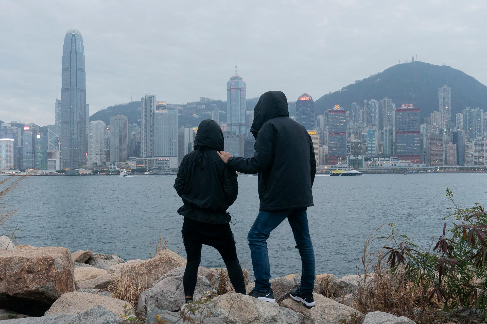

過往數年，律政司少有向上訴庭提刑期覆核，每年覆核案件宗數均是個位數字，但情況到了 2020 年即有所轉變。律政司全年就 17 宗案件提出刑期覆核，數字比過去三年加起來還要多。19 個涉反修例案件的被告在審訊後，遭律政司覆核刑期。最終全數遭加刑。其中 8 人案發時尚未成年，6 人更不足 16 歲。
【少年犯．二】趕盡殺絕？ 律政司狂覆核刑期 8 未成年被告遭加刑
19 個涉反修例案件的被告在審訊後，遭律政司覆核刑期。
最終全數遭加刑。
其中 8 人案發時尚未成年，6 人更不足 16 歲。

15歲男童
原判感化令12個月
改判入更生中心

15歲男童
原判感化令3年
改判入教導所
14歲女童
原判兒童保護令12個月、不留案底
改判感化令12個月、留案底
14歲男童
原判兒童保護令12個月、不留案底
改判社會服務令80小時、留案底
15歲女童
原判感化令12個月
改判社會服務令120小時
「點解要係咁咬住唔放呀！我要見個仔！」
一宗刑期覆核後，少年母親在法庭外，向律政司律師斥道。她的 16 歲兒子，原本獲判感化，但因為律政司提出刑期覆核，他被法庭改判教導所，被迫與家人分離。
這樣的例子不是孤例。去年特首林鄭月娥自稱「心痛年輕人」，甚至稱保安局局長李家超及警務處處長鄧炳強亦關心學生、「心好軟」，律政司的實際舉動卻明顯相反，多次不服法院判刑過輕，提出刑期覆核。其中 8 名被覆核刑期的被告尚未成年，律政司對此強調：「年紀相比公眾利益顯得微不足道」。「不會因年紀輕而格外開恩」、「合適判刑應為短期即時監禁」、「行為是社會大眾憎惡的罪行」…律政司提出刑期覆核時，往往這樣說。
2020 刑期覆核案大增
過往數年，律政司少有向上訴庭提刑期覆核，每年覆核案件宗數均是個位數字，但情況到了 2020 年即有所轉變。律政司全年就 17 宗案件提出刑期覆核，數字比過去三年加起來還要多。
每年覆核刑期案件數字
註： 資料綜合自律政司回覆及傳媒報道；部分2020 及21 年的審訊未結束，實際個案或更多
律政司司長鄭若驊早前明言，大部分刑期覆核申請與反修例案件有關。翻查案件判決書及傳媒報道，2020 年律政司覆核刑期完成的 17 宗案件中，14 宗與反修例有關；2021 年首兩宗覆核刑期案亦是反修例案，兩名被告分別被指破壞喜茶分店及何君堯議員辦事處。
被律政司提出刑期覆核申請的 19 名反修例案件被告，當中 8 人尚未成年，6 人案發時更未滿 16 歲。而目前所有涉及反修例案件的覆核申請，律政司全數勝訴，19 人全部都要加刑。
其中， 9 人由本來不須拘留，被改判監禁式刑罰，當中包括 2 人入更生中心、1 人入勞教中心、1 人入教導所，以及 5 人改判入獄。落差最大的是被指煽動包圍新屋嶺的地盤工，他由被判社會服務令 160 小時，經律政司覆核刑期後，被改判入獄 13 個月。
另有 5 人原本已被判囚，刑期在覆核後遭加長。
遭覆核加刑的被告不少年紀甚輕，被改判監禁式刑罰的 9 人中， 4 人案發時未滿 18 歲。另有 2 名案發時僅 14 歲的少年犯由不留案底，變成要留案底；1 名案發時 15 歲少女由感化令改判社會服務令。
另有兩名分別 17 歲及 19 歲的男生正在還押，待索取相關報告後判刑。兩人原本均被判社會服務令，上訴庭在 3 月裁定原審裁判官原則出錯，延至 4 月中再判刑，即是未有判刑，兩人已經要還押一個月。
律政司刑期覆核全勝 9 人改判監禁式刑罰
*包括更生中心、勞教中心、教導所、入獄
註：資料綜合自傳媒報道
兒子遭加刑如「人球」 父：政權消滅小朋友
兒子由判感化變為判入勞教中心的李氏夫婦（化名），切身感受律政司覆核刑期對年輕人的打擊。
一場法庭審訊過後，控辯雙方有權在 21 日內提出上訴申請，李氏夫婦在限期前最後一日，即第 21 日，才收到律政司對兒子案件的刑期覆核申請。
「一聽到係好沉重，你咁樣追擊一個小朋友係何苦呢？雖然佢係做錯，但已經受到刑罰啦」，李媽媽解釋，兒子在原審被判感化令，但當中其實包括 9 個月的兒童院住宿訓練，「其實已經係冇得返屋企，你哋再咁追擊佢，係受到一重打擊之後再一重，係好難受」。
撇開加刑不論，再次面對法庭程序本已磨人。李爸爸說，兒子案件歷時近年，認罪後一度還柙壁屋懲教所候判，以為在兒童感化院可以安定下來，怎料又有覆核刑期，本來已開始適應院舍生活的兒子，一知道刑罰有機會加重，精神狀態極差，「佢直情冇哂心機，坐埋一邊發吽哣，有院舍職員見到佢直情係會自言自語。」
及至上訴庭接納申請，兒子又要需要轉往壁屋候判，與感化院環境落差極大，也要再次剃頭，李爸爸形容，「好似個波咁，你唔會知道阿仔呢個波會俾佢哋踢去邊」。李媽媽記得，在壁屋探望時，兒子第一次在他們面前哭，「從來都無見過佢咁，好心痛」。
兒子最終被上訴庭判入注重紀律的勞教中心，羈押期最長 6 個月，獲釋後亦須接受一年監管，而他在判刑前還押逾一個月的時間，將不獲扣減。在兒子判入勞教中心後，一家三口只有兩星期一次的半小時相聚，即使隔著口罩，父母也觀察到兒子臉頰明顯消瘦。
李生李太兒子的案件及後成為裁判官引用的案例，以強調阻嚇的重要性，其後律政司亦對更多案件、更多青少年提刑期覆核。
李爸爸覺得，往後法院對青少年亦不會「鬆手」，「而家香港呢個情況，唔係放棄，係消滅呢班小朋友，係斬草除根」，李媽媽接下去說，「消滅呢班人，俾其他人睇到 — 做咩都撼動唔到呢個政權」。

兒子因律政司刑期覆核要加刑，要與父母分開，李氏夫婦感慨，政權及法院似是要消滅年輕人，「俾其他人睇到 — 做咩都撼動唔到呢個政權」。（Oiyan Chan 攝）
為何屢覆核？鄭若驊：法官都會錯
為何律政司不停提出覆核？律政司司長鄭若驊去年曾解釋稱「法官都會錯」，「如果不是有咁多宗判錯，我們不用做（量刑覆核）」。而在她眼中，大多數判刑其後被推翻，正反映律政司覆核正確。鄭若驊又指，在普通法中，上級法院的裁決對所有下級法院具約束力，「下面的法官全部應該看到這個原則而要跟隨，如果不跟，我們唯有從頭再來一次。」
至今年年初，患亞氏保加症少年掟汽油彈的案件遭律政司上訴，後改判入教導所，引起爭議。律政司再發稿重申，所有上訴或覆核決定均是經仔細研究後按相關法例提出，再由法庭依法作出裁決，不點名批評傳媒報導「帶有偏見」。鄭若驊上月發網誌則引用上訴法庭在律政司司長訴 SWS案的判案書表示，基於「公眾利益」考慮，干犯嚴重罪行或犯罪情況而需要判處犯案者嚴厲判刑時，被告年輕或個人背景的比重將會「極其有限」，甚至是「微不足道」…因為「嚴懲或阻嚇的需要遠超過犯案者更生的需要」。
她強調，律政司在已裁決的申請中全數得直，強調檢控人員是「以同等的尺度，不偏不倚地秉行公義」。
有不願具名的大律師就向《立場新聞》質疑律政司的說法，指過往即使有輕判案件，律政司亦不會隨便提出覆核，惟反修例案則是「係唔係都用呢張牌」，反問「下級法院會唔會今年特別多錯嘢？」他又分析，一方面是律政司希望向社會發出「這類被告必須重懲」的警號，另一方面上訴庭亦與律政司有一樣的看法，變相鼓勵律政司繼續做，「次次上到嚟都 buy，我（律政司）梗係繼續做」。
大律師：律政司趕盡殺絕
該大律師又不諱言，同意外界形容律政司對反修例案件被告「趕盡殺絕」，因他有時亦對律政司的舉動感不解，「見過有啲唔讀書、做黑社會（犯案），判得仲輕過啲普通中學生拎索帶，你又唔去搞（覆核）？」
他亦認為，警方與律政司的嚴苛不單在刑期覆核上，舉例指曾有學生出現在衝突現場，警方拘捕後沒有檢控，反而申請兒童保護令，將之帶上法庭，「話佢屋企唔識睇住佢又盛，你都唔係要告佢，做咩要咁樣呢？」學生及後被關押在屯門兒童及青少年院，期間不能正常上學。最後在無辜遭關押近一個月後，感化報告表明家人有能力照顧學生，換言之警方根本無必要施加保護令。
有大律師同意，外界形容律政司對反修例案件被告「趕盡殺絕」，坦言即使法庭沒有判處監禁式刑罰，「轉頭難保律政司唔會『隊』你上去」。（Oiyan Chan 攝）
裁判官：若輕判律政司會上訴 對被告影響更大
上周一宗
公眾地方妨擾案中，15 歲男學生承認堵路，裁判官陳慧敏明言，很大機會判被告感化或社會服務令，但不忘強調，「我輕判佢，律政司上訴，對於被告影響更大，俾佢錯誤 expectation（期望）。再一次聆訊，對佢唔係有益係有害。」男生最終要還押至 4 月 20 日，待索取勞教中心及感化等報告後判刑。
接受《立場》訪問的大律師坦言，即使未必人人同意上訴庭的看法，惟上訴庭判詞對裁判法院有約束力，「下級法院都要跟呢個講法去做，幾同情個人背景都好，如果 case 嚴重，都冇得搞，焗住做」，他只可叫當事人作好心理準備，「有時都要講，認罪都好，都會要坐，就算你呢條罪未有（上訴庭）案例，判社會服務令先算，轉頭難保律政司唔會『隊』你上去。」
案件詳細資料
干犯嚴重罪行，法庭不會因為年紀輕而格外開恩…
反而發出錯誤訊息，令潛在犯案者（尤其是年輕人）萌生投擲汽油彈的念頭
襲警一般會判處即時監禁。本案屬條例中最嚴重案例之一。
案情「極其嚴重」
，若犯事者為成年人，判刑應介乎4至5年，現時被告
犯案時非極度年輕
，卻被判感化令。
非拘禁式刑罰不足以反映被告的罪責
，原審裁判官忽略懲罰與阻嚇。
兒童保護令 12 個月、不留案底
→
感化令12個月、留案底
兩人精神狀態相對穩定，如案情十分嚴重，則
不應就精神狀態及個人情況給予比重
。
判刑需要須具阻嚇性至為重要，而
合適的判刑應為短期即時監禁
，如即時監禁不適合，則應考慮其他監禁式刑罰，例如更生中心等。
兒童保護令 12 個月、不留案底
→
社會服務令 80 小時、留案底
兩人精神狀態相對穩定，如案情十分嚴重，則
不應就精神狀態及個人情況給予比重
。
判刑需要須具阻嚇性至為重要，而
合適的判刑應為短期即時監禁
，如即時監禁不適合，則應考慮其他監禁式刑罰，例如更生中心等。
非拘留式刑罰並未能反映本案行為是社會大眾憎惡的罪行
，反而會發出錯誤訊息，以為年輕及「貪玩」是有效的求情因素。
不能忽視製造和測試汽油彈對人命及財產可能帶來損失。
註：為案發時年齡；資料綜合自案件判決書及傳媒報道